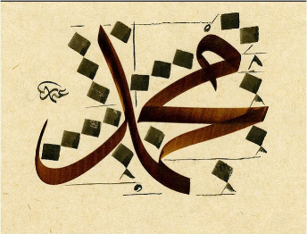
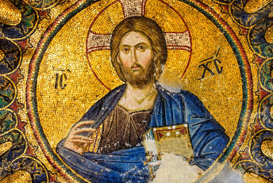

Many people might wonder, what is the point of learning about the past, afterall, it has already passed. However, some things from the past are still with us here today.
the rest of this page will be about different things that medieval socities left behind for us today, their legacies. Write down in your notes examples of medieval legacies that you still know about or use today.
The Legacies of the Medieval World.

Many new religions were created during the medieval period. In addition, some old religions changed a lot during this time. Some examples of important religions that were influenced by the medieval world were:

- Islam
- Christianity
- Daoism
- Buddhism
- Jainism
The Medieval period was a time of great innovation and new technology. Some examples of medieval technologies include:
- Glasses
- Paper
- Cafes
- Silk
- Arabic Numbers (those are the ones we use)
The Medieval period was a time of expanding trade, many important items became much more widespread during this time including:
- Sugar
- Spices like cloves, cinnamon, & nutmeg
- Coffee